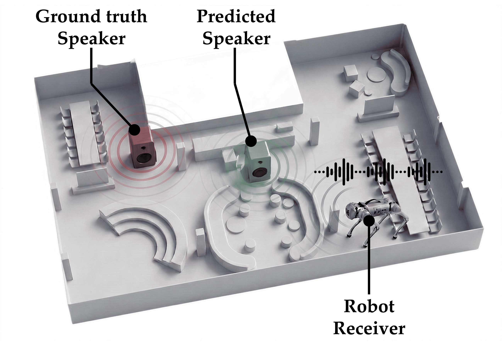

Build the yaw orbit
Transform the panoramic geometry and target/context source coordinates consistently. Keep the receiver position and acoustic RIRs fixed.
Frame-Averaged Few-Shot RIR Synthesis for 3D Sound Source Localization
Learn how a room sounds.
Use that knowledge to find where sound begins.
Princeton University
A geometry-constrained acoustic generator, inverted for localization without task-specific training.

Lower T60 error
Relative to FLAC · unseen rooms · Kctx = 8
Localization within 0.5 m
FLAC: 15.6% · 64 localization queries
Median localization error
Frozen generator · no localization fine-tuning
Can a model trained to synthesize acoustics also reason about space?
A room impulse response (RIR) captures how sound travels from a source to a receiver, including reflections from the surrounding environment. It carries information about both the room and the source location.
OrbitRIR learns this forward acoustic model from sparse room context. We build a known physical symmetry into its conditioning: re-expressing the same scene in a different receiver-yaw coordinate frame should not change an omnidirectional, monaural RIR.
Then we turn prediction into inference. With the generator frozen, we synthesize responses at candidate 3D locations and find the one most compatible with the observation.
Embodied spatial reasoning requires inferring 3D world states from partial sensory observations. Room acoustics offers a rich spatial signal, but few-shot acoustic generators do not necessarily respect known symmetries. OrbitRIR incorporates receiver-yaw invariance through Frame Averaging over a finite yaw orbit. Its geometry-conditioned latent flow-matching model predicts RIRs using a panoramic depth map and sparse acoustic context. The same trained model supports 3D sound source localization through analysis-by-synthesis, without localization-specific training or fine-tuning. On AcousticRooms, it improves all six synthesis metrics over FLAC at both context sizes and improves localization performance over that baseline. This summary paraphrases the manuscript.

Frame Averaging removes an arbitrary coordinate choice from the conditioning. The geometry encoder is shared across yaw frames, and its outputs are averaged before conditioning the generator.
Transform the panoramic geometry and target/context source coordinates consistently. Keep the receiver position and acoustic RIRs fixed.
Apply the same ViT and linear projection to each frame. Averaging the features produces an invariant geometry representation over the chosen finite group.
Combine the invariant conditioning with acoustic context. A DiT trained with latent flow matching predicts RIR latents, decoded by a frozen pretrained VAE.
Choose a C4 frame change. The four encoded features are permuted; their average stays the same.
What is guaranteed? Invariance over the finite yaw group CN, illustrated here with C4. This is a change of coordinate frame for the same omnidirectional monaural acoustic scene; it does not mean a directional speaker can be turned without changing its acoustics. Arbitrary continuous SO(2) invariance is not guaranteed.

Evaluated on AcousticRooms, with sparse and dense acoustic context. The tables below reproduce the manuscript’s reported results, including the baselines and their trade-offs.
| Method | T60 (%) ↓ | C50 (dB) ↓ | EDT (ms) ↓ | R@1 (%) ↑ | R@5 (%) ↑ | R@10 (%) ↑ |
|---|---|---|---|---|---|---|
| FLAC | 10.287± 0.026 | 1.0884± 0.0088 | 43.437± 0.397 | 4.990± 0.115 | 15.111± 0.129 | 22.509± 0.181 |
| OrbitRIR | 9.543± 0.054 | 1.0559± 0.0040 | 41.754± 0.347 | 5.166± 0.166 | 16.071± 0.241 | 23.721± 0.150 |
| Yaw-Augmented FLAC | 9.397± 0.052 | 1.0855± 0.0051 | 42.447± 0.379 | 5.031± 0.063 | 15.919± 0.256 | 23.166± 0.135 |
| Method | T60 (%) ↓ | C50 (dB) ↓ | EDT (ms) ↓ | R@1 (%) ↑ | R@5 (%) ↑ | R@10 (%) ↑ |
|---|---|---|---|---|---|---|
| FLAC | 8.993± 0.011 | 1.0093± 0.0035 | 40.650± 0.101 | 5.173± 0.138 | 15.430± 0.197 | 23.409± 0.056 |
| OrbitRIR | 8.202± 0.017 | 0.9778± 0.0015 | 38.793± 0.074 | 5.387± 0.075 | 16.456± 0.038 | 24.198± 0.164 |
| Yaw-Augmented FLAC | 7.965± 0.014 | 1.0132± 0.0016 | 39.923± 0.057 | 5.391± 0.097 | 16.563± 0.169 | 23.961± 0.107 |
Mean ± sample standard deviation over five evaluation seeds (42–46), resampling context RIRs and generative noise. Bold indicates the best mean in each column. T60: reverberation-time error; C50: clarity error; EDT: early decay-time error. R@k: AGREE retrieval recall. ↓ lower is better; ↑ higher is better.
OrbitRIR improves all six synthesis metrics over FLAC for both context sizes. Yaw augmentation has lower T60 error; at K = 8, it also has slightly higher R@1 and R@5. OrbitRIR has lower C50 and EDT errors and higher R@10 in both settings.
Re-expressing the same unseen-room queries at 0°, 90°, 180°, and 270° leaves OrbitRIR’s reported metrics nearly unchanged. FLAC is sensitive to the coordinate frame.

Given an observed monaural RIR, query the frozen model at each candidate source position. Compare generated and observed responses using cosine similarity in the frozen AGREE audio embedding space, then return the highest-scoring location.
SR@0.5 m increases from 15.6% to 28.1% relative to FLAC: a gain of 12.5 percentage points.
| Method | Median error (m) ↓ | SR@0.5 m ↑ | SR@1.0 m ↑ | Resolution-aware SR@0.5 m ↑ |
|---|---|---|---|---|
| OrbitRIR | 0.928 | 28.1% | 53.1% | 40.6% |
| FLAC | 1.009 | 15.6% | 50.0% | 23.4% |
| Yaw-Augmented FLAC | 0.892 | 21.9% | 54.7% | 34.4% |
| FEM-Based Localization | 1.059 | 28.1% | 50.0% | 35.9% |
| Few-ShotRIR (AR-adapted) | 1.595 | 1.6% | 26.6% | 15.6% |
| Random Selection | 2.320 | 7.8% | 18.8% | 14.1% |
SR is the fraction of predictions within the stated Euclidean distance. The resolution-aware metric adjusts for the candidate grid’s discretization error (manuscript Appendix B.5). All methods use the evaluation protocol described in the paper.
OrbitRIR ties FEM on SR@0.5 m and has the highest resolution-aware SR@0.5 m. Yaw-Augmented FLAC has the lowest median error and highest SR@1.0 m. These metrics capture different parts of the error distribution.

Experiments shown here use AcousticRooms. The method assumes an omnidirectional monaural RIR, registered geometry, and sparse acoustic context. The illustrations do not establish real-robot deployment.
Frame Averaging enforces invariance on a finite yaw orbit. Localization searches a finite candidate grid: finer resolution can improve spatial precision at increased inference cost.
Research materials for reviewing OrbitRIR.
Provisional manuscript citation. Author order and publication metadata should be confirmed against the final public paper.
@misc{hu2026orbitrir,
title = {OrbitRIR: Frame-Averaged Few-Shot
RIR Synthesis for 3D Sound Source Localization},
author = {Hu, Yixun and Zhao, Zhixuan and
Zhong, Tao and Allen-Blanchette, Christine},
year = {2026},
note = {Manuscript; NeurIPS 2026 ESR Workshop}
}